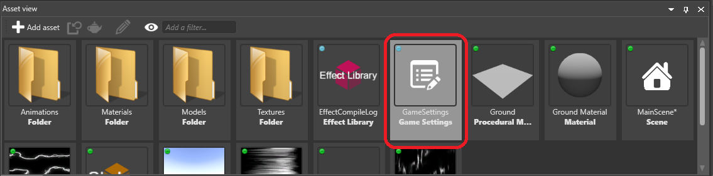
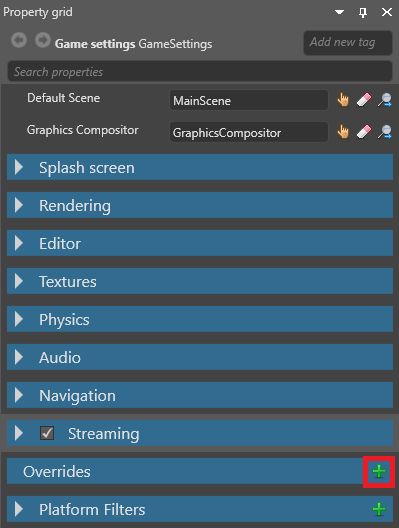
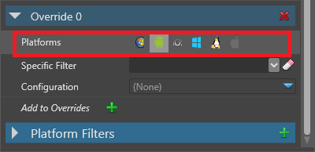
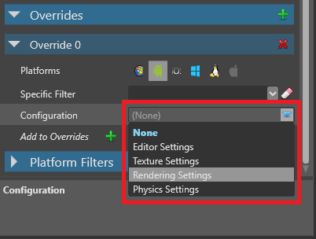
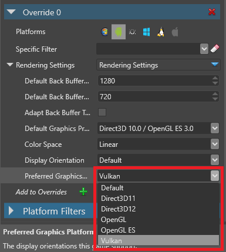
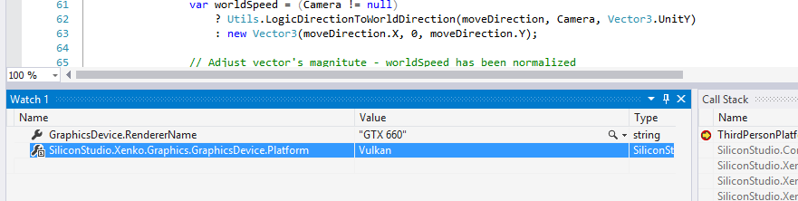

Set the graphics platform
Warning
Приносим свои извинения за неудобства. Для этой страницы нет перевода на русский язык. Она будет отображаться на английском языке.
Beginner
The graphics platform controls the graphics hardware in the device you run your project on. Different devices support different graphics platforms; for example, iOS supports the OpenGL ES graphics platform. You can select which graphics platform your game uses, and add overrides for different platforms (eg Windows, Android, etc).
Warning
Moving from Direct3D to an earlier Direct3D version can create problems. For example, if your game contains HDR textures, it will crash, as Direct3D 9 doesn't support them.
You set the graphics platform in the game settings asset.
Note
Make sure you have the latest drivers for the graphics platforms you want to use.
In the Asset View, select the Game Settings asset.

In the Property Grid, under Rendering Settings > Target graphics platform, select the graphics platform you want to use.

If you select Default, Stride uses the graphics platform appropriate for your platform (eg Windows, Android) when you build.
| Platform | Default graphics platform |
|---|---|
| Windows, UWP | Direct3D11 |
| Linux, Mac OS | OpenGL |
| Other | OpenGL ES |
Override the graphics platform
You can override the graphics platform Stride uses for specific platforms. For example, you can have Linux use Vulkan while other platforms use the default.
With the GameSettings asset selected, in the Property Grid, under Overrides, click
 (Add).
(Add).
Game Studio adds an override.
In the new override, next to Platforms, select the platforms you want this override to apply to.

In the Configuration drop-down menu, select Rendering Settings.

Under Rendering Settings, in the Preferred Graphics Platform drop-down menu, select the graphics platform you want to use.

Stride overrides the graphics platform for the platforms you selected.
Check which graphics platform your project uses
Add a break point to your game code (eg in a script).
Run the project.
Check the value of the GraphicsDevice.Platform variable.
For example, this project is using Vulkan:
